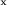
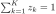
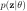
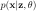
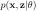
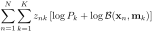
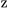
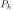

If the data are binary, i.e., each data point  is treated
as a discrete random variable that takes either of two binary
values and 0 with probabilities
is treated
as a discrete random variable that takes either of two binary
values and 0 with probabilities  and , then
the probability mass function (pmf) is the Bernoulli
distribution:
and , then
the probability mass function (pmf) is the Bernoulli
distribution:
The mean and variance of are
A set of  independent binary variables can be represented
as a random vector
independent binary variables can be represented
as a random vector
![${\bf x}=[x_1,\cdots,x_d]^T$](img3.svg) with mean vector
and covariance matrix as shown below:
with mean vector
and covariance matrix as shown below:
|
 |
|
(297) |
|
|
|
(298) |
Note that the covariance matrix
 is solely determined
by the means
.
is solely determined
by the means
.
Now we can get the pmf of the a binary random vector :
and the log pmf:
Similar to the Gaussian mixture model, the Bernoulli mixture model
of  multivariate Bernoulli distributions is defined as:
where
denotes
all parameters of the mixture model to be estimated based on
the given dataset, and
respect to
. The mean of this mixture model is
multivariate Bernoulli distributions is defined as:
where
denotes
all parameters of the mixture model to be estimated based on
the given dataset, and
respect to
. The mean of this mixture model is
Also similar to the Gaussian mixture model, we introduce a set of
latent binary random variables
with binary
conponents
and
, and get the prior
probability of  , the conditional probability of given
, and the joint probability of and as the
following
, the conditional probability of given
, and the joint probability of and as the
following
|  |
|
 |
(303) |
|  |
|
|
(304) |
|  |
|
|
(305) |
Given the dataset
![${\bf X}=[{\bf x}_1,\cdots,{\bf x}_N]$](img9.svg) containing
containing
 i.i.d. samples, we introduce the corresponding latent variables
in
i.i.d. samples, we introduce the corresponding latent variables
in
![${\bf Z}=[{\bf z}_1,\cdots,{\bf z}_N]$](img979.svg) , of which each
, of which each
![${\bf z}_n=[z_{n1},\cdots,z_{nK}]^T$](img980.svg) is for the labeling of
is for the labeling of  .
Then we can find the likelihood function of the Bernoulli mixture model
parameters
:
.
Then we can find the likelihood function of the Bernoulli mixture model
parameters
:
|
|
|
|
| |
|
|
(306) |
and the log likelihood function:
|
|
|
|
| |
|
 |
(307) |
Based on the same EM method used in Gaussian mixture model, we can
find the opptimal parameters that maximize the expectation of the
log likelihood function in the following two steps:
- E-step: Find the expectation of the likelihood function.
We first find the posterior probability for any sample
to belong to cluster  , denoted by
, denoted by  :
:
 |
(308) |
which is the expectation of :
Now we can find the expectation of the log likelihood with respect to
the latent variables in :
- M-step: Find the optimal model parameters that maximize
the expectation of the log likelihood function.
We first set to zero the derivatives of the expectation of
the log likelihood with respect to each of the parameters in
, and then solve
the resulting equations to get the optimal parameters.
- Find : same as in the case of the GMM model:
- Find
 :
:
| |
|
|
|
| |
|
|
|
| |
|
|
(312) |
The ith component of the equation is
| |
|
|
|
| |
|
|
(313) |
i.e.,
Solving for  we get
or, in vector form,
we get
or, in vector form,
Example:
Clustering results of hand-written digits with and . The mean
vectors of each of the clusters are visualized as shown: